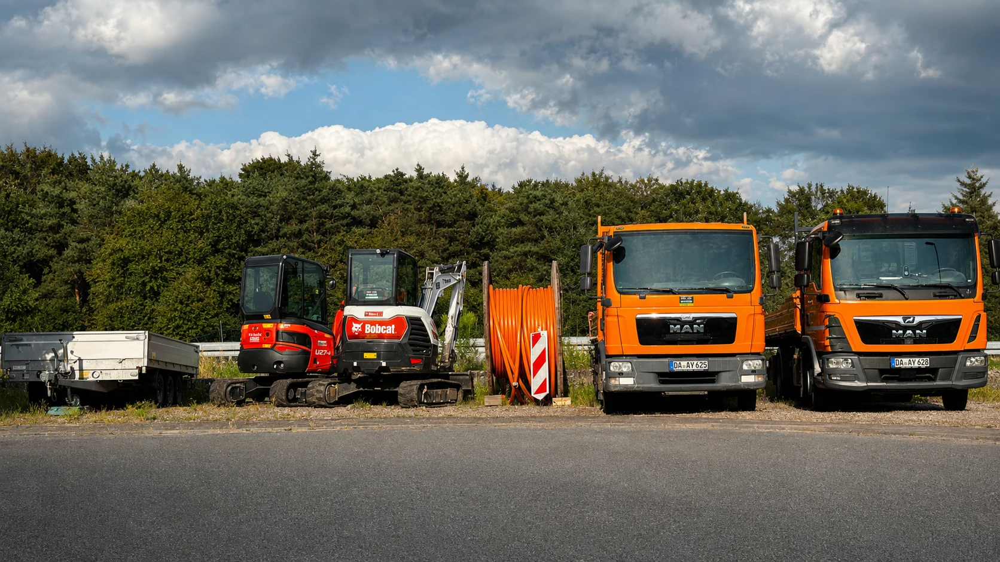
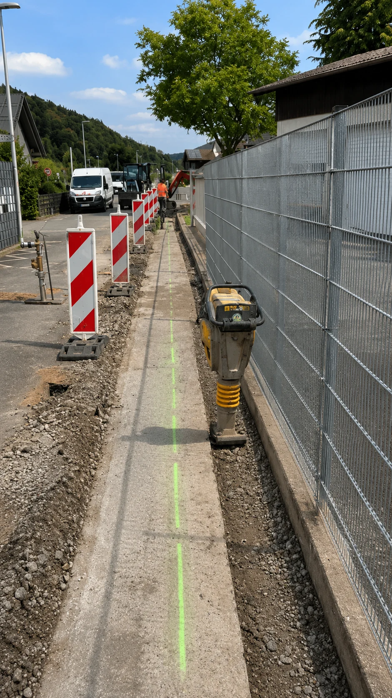
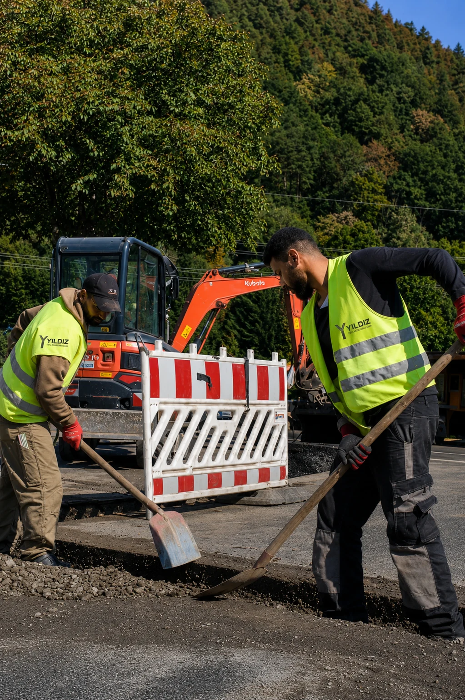

Direkter Draht
Kurze Abstimmungswege und ein erreichbarer Ansprechpartner, wenn Entscheidungen anstehen.

Glasfaser · Tiefbau · Straßenbau
Infrastruktur mit Verantwortung. Von der Trasse bis zur fachgerecht wiederhergestellten Oberfläche.
Qualität
Zuverlässigkeit
Termintreue
Wenn Infrastruktur zählt
Auf der Baustelle zählt nicht, wie viele Leistungen auf einer Liste stehen. Entscheidend ist, dass Verantwortung greifbar bleibt, Abstimmungen funktionieren und jeder Arbeitsschritt sauber in den nächsten übergeht.
Genau dafür steht YILDIZ: direkte Kommunikation, fachgerechte Ausführung und ein Ergebnis, das auch nach Abschluss der Arbeiten überzeugt.

Unser Arbeitsversprechen
Kurze Abstimmungswege und ein erreichbarer Ansprechpartner, wenn Entscheidungen anstehen.
Ein Einsatz wird nicht nur begonnen, sondern verbindlich begleitet und sauber zu Ende geführt.
Die fertige Fläche gehört zum Ergebnis. Ordnung und Sorgfalt enden nicht an der Trasse.

Bereit für den nächsten Einsatz
Für eine erste Einschätzung brauchen wir keine lange Ausschreibung per Kontaktformular. Einsatzort, gewünschter Leistungsumfang und geplanter Zeitraum reichen für den Anfang.